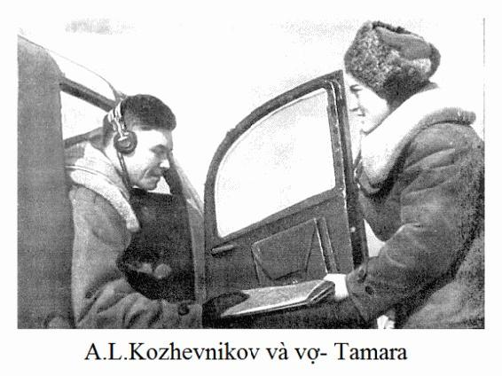

Bộ đội của phương diện quân chuẩn bị cho cuộc vượt sông Đnhepr. Trung đoàn không quân tiêm kích chúng tôi được giao nhiệm vụ nặng nề. Chúng tôi huấn luyện cho số phi công mới, rồi nghiên cứu khu vực tác chiến tới, đồng thời tổ chức trực ban chiến đấu. Trong những ngày này, tôi thêm hiểu Môtuzcô hơn cả ở trên trời lẫn ở dưới mặt đất. Năng động, sáng ý, chuẩn xác, cậu ta nổi trội hơn cả trong số những phi công tiêm kích mới về phi đội. Cậu ta khiêm tốn, phục tùng và có tấm lòng vì đồng đội. Những đức tính ấy khi vào trận sẽ không hề lo lắng cho bản thân. Liều mạng, không tính toán cá nhân, những người như vậy luôn luôn giơ ngực ra gánh đỡ cho đồng đội lúc khó khăn.
Và rồi, buổi sáng hàng chờ đợi cũng đã đến. Khi toàn trung đoàn tề tựu dưới lá cờ đỏ thì thiếu tá Obôrin nói rằng những trận đánh để giành lại mảnh đất Ucraina đã bắt đầu. Đồng chí kêu gọi hãy tiêu diệt kẻ thù ở trên trời lẫn ở dưới mặt đất không thương tiếc, phải quyết giành chiến thắng trong các trận không chiến. Những chiến binh trong đội ngũ rất xúc động. Tôi hiểu rằng trong giờ khắc này - đã bắt đầu những trận chiến ác liệt và những thử thách cũng khắc nghiệt không kém.
Lát sau, Obôrin cặn kẽ giải thích nhiệm vụ chiến đấu của chúng tôi. Chúng tôi chịu trách nhiệm phải yểm hộ sư đoàn không quân ném bom oanh kích vào phòng tuyến bên phải bờ sông Đnhepr, đảm bảo cho bộ đội ta vượt sông và làm chủ chiến trường.
Tư lệnh binh đoàn - phi công công huân, thiếu tướng Pôlbin dẫn đầu đoàn quân ném bom. Khi bay đến bờ sông Đnhepr chúng tôi gặp tầng mây dày đặc và thấp. Đội hình máy bay giảm xuống bay ở độ cao thấp. Pôlbin ra lệnh: "Tất cả đều tấn công. Các máy bay tiêm kích chế áp hoả lực pháo cao xạ trước tiên!". Chúng tôi lao xuống bắn phá các khẩu đội cao xạ. Những luồng đạn hướng về phía các máy bay ném bom lập tức thưa dần.
Và 9 chiếc "Pe" đi đầu đã đến mục tiêu, sau đó là tốp thứ 2, thứ 3, rồi thứ 4. Dòng máy bay ném bom che kín bầu trời ở khu vực giữa vùng Mitsurin Rôc và Bôrôđaepca. Hàng chục, hàng trăm quả bom rơi làm rung chuyển cả vùng lân cận, tung lên trời những cuộn đất khổng lồ, tiêu diệt những công sự tồn tại bấy lâu nay của lũ phát xít. Sau đó vài phút, trên mặt đất không còn trông thấy bóng dáng những khẩu pháo, những xe tăng, những giao thông hào của địch nữa. Tất cả bị màn khói đen trùm phủ. Còn những máy bay ném bom thì vẫn bay, vẫn rắc hàng ngàn tấn thép chết chóc lên phòng tuyến địch.
Không quân đã giúp cho lực lượng bộ binh rất nhiều. Đến buổi chiều ngày thứ nhất, bộ binh ta đã đổ bộ lên bờ bên phải, chiếm lĩnh chiến trường và củng cố vững chắc những khu vực đã chiếm. Đêm đến, đội quân đặc nhiệm được tăng cường cũng đánh chiếm tuyến đường sắt quan trọng ở Piatikhatca.
Đấy là một thành phố nhỏ mà cả đời tôi không thể nào quên được. Nơi đây, tôi đã gắn bó số phận tôi với Tamara Ođenôva. Cô ấy phục vụ trong trung đoàn kỹ thuật. Chúng tôi đăng ký kết hôn ở phòng hộ tịch của Piatikhatca.
- Đây là đôi đầu tiên kết hôn sau khi thành phố được giải phóng, - cô thư ký của ủy ban nhân dân thành phố vừa cười vừa thông báo cho chúng tôi biết. - Giấy giá thú chưa có. Cô ta đành viết giấy chứng nhận tạm thời cho cuộc hôn nhân của chúng tôi.
Tôi và Tamara đã là những người hạnh phúc nhất trên đời này. Bây giờ chúng tôi được cùng nhau chiến đấu, sống cùng với nhau trong một trung đoàn.

... Sang đến ngày thứ hai, cuộc tấn công bắt đầu bằng những trận không chiến. Chúng xảy ra lúc ở nơi này, lúc ở nơi khác. Diễn ra nhiều hơn cả là ở khu vực không quân địch cố gắng tìm mọi cách ghìm chân bộ đội ta đang tấn công. Các phi công trẻ đã kịp tiếp thu những kinh nghiệm, học được cách cương quyết bẻ gãy những đợt tấn công của địch và tấn công chúng dũng mãnh.
Lần chúng tôi nhận nhiệm vụ yểm hộ quân vượt sông Đnhepr. - Khi chúng tôi bay gần đến đấy thì tôi phát hiện thấy 9 chiếc máy bay ném bom loại "Hâyken-111". Chúng bay dưới sự yểm hộ chặt chẽ của bọn "Metxersmit". Tôi quyết định tấn công ngay. Biên đội 4 chiếc của Xêmưkin có trách nhiệm kìm chân lũ tiêm kích, còn biên đội tôi - tấn công đội hình máy bay ném bom.
Chiếm vị xong, tôi ra lệnh: "Theo tôi, vào công kích!" - Và tôi lao vào thằng bay dẫn đầu. Những viên đạn của khẩu pháo 37 ly nã đúng vào buồng lái thằng "Hâyken". Lần công kích thứ hai, tôi cố gắng chỉ cho các phi công trẻ cách cần phải tiếp cận vào đội hình mật tập của bọn ném bom như thế nào, cần lợi dụng thằng khác để nó che chắn cho mình ra làm sao. Và chiếc ném bom thứ hai nhanh chóng bốc cháy, lao xuống đất.
Tôi bay lánh ra một phía, lệnh cho các phi công trẻ vào tiêu diệt bọn còn lại và chỉnh sửa từng động tác một cho họ. Axkircô vững vàng, cố gắng dẫn đầu biên đội của mình. Công kích lần thứ nhất, tiếp tục lần thứ hai và máy bay địch bùng cháy, rơi vào xoáy ốc. Còn Xêmưkin ghìm chân lũ tiêm kích giỏi đến nỗi không một thằng nào đến quấy rầy chúng tôi được cả.
Bộ binh tiến về phía trước. Cánh quân phía trái đã tiến đến gần Krivôi Rôc, còn cánh phải thì đánh chiếm được thành phố Alêchxanđria. Chúng tôi bay chuyển sân đến sân bay Piatikhatca.
Trên đoạn phòng tuyến của chúng tôi, tình hình đã diễn ra, như những người hay đùa, nói - giống như "chiếc quần dài": hai phía sườn thành hai hành lang hẹp đẩy hẳn về phía trước, trong khi ấy, cánh quân trung tâm lại tụt lại phía sau. Bọn địch lợi dụng ngay điều kiện thuận lợi ở tuyến trước, cắt ngang chỗ lồi ra. Với ý đồ ấy, bọn chúng bắt đầu điều chuyển lực lượng tăng dự bị.
Vào tháng 11, mặc cho thời tiết xấu, chúng tôi vẫn xuất kích liên tục đi trinh sát để đánh dấu từng điểm tập kết của quân địch dù là nhỏ nhất. Chúng tôi phát hiện thấy ở phía sườn phải của Phương diện quân, suốt từ Giôntưi Vôd cho đến Krivôi Rôc có hàng đàn tăng Đức. Bọn địch rõ ràng là chuẩn bị cho cuộc phản công ở đây rồi. Chúng tôi chỉ ngạc nhiên một điều: tại sao chúng lại nằm lại lâu thế ở tuyến xuất phát? Một ngày qua, rồi ngày thứ hai, rồi đến ngày thứ ba... vẫn im lặng. Mãi đến tận sau này mới vỡ lẽ ra là những "con hổ", "con báo" ấy không có nhiên liệu: đoàn xe téc chở nhiên liệu đã bị du kích Ucraina lật xuống dốc rồi. Bọn phát xít cố gắng chở bằng các xe tải, nhưng từ sáng sớm đến tận tối mịt chúng tôi liên tục bắn phá đoàn xe ấy trên dọc tuyến đường giữa Lôzôvatca và Belenhikhinô.
Có một lần, khi đi oanh kích về, chúng tôi phát hiện được một địa điểm tập kết với số lượng lớn tăng Đức. Điểm tập kết này cho đến tận khi ấy chúng tôi chưa phát hiện được lần nào. Tôi quyết định xác định số lượng của chúng.
Chúng tôi lao xuống đến độ cao 100 - 150m. Bọn phát xít lập tức bắn tới tấp. Vừa cơ động giữa các điểm nổ, tôi vừa đếm và nhớ cách bố trí của đội hình tăng. Vòng đầu tiên chưa đạt yêu cầu. Chúng tôi vòng lại lần hai, rồi lần ba. Cuối cùng thì nhiệm vụ trinh sát cũng đã hoàn thành. Tôi lập tức báo cáo qua đối không về kết quả trinh sát và lấy hướng quay về.
Bất ngờ... Một cú giáng cực mạnh. Máy bay lập tức rất khó điều khiển và rung mạnh đến nỗi như muốn nhổ cả cần lái ra. Nhưng cả lần này nữa, vận may cũng không bỏ rơi tôi. Bằng sự nỗ lực rất lớn, tôi đã vượt ra được khỏi vùng hoả lực và bay cắt qua phòng tuyến mặt trận.
- Lại bị những cú bắn thẳng rồi, phi đội trưởng ạ. Anh có nhớ trường hợp hồi ở sông Đông không? - Zakirôp nói khi nhìn qua những lỗ thủng trên bánh lái lên xuống. Mà làm sao lại không bị đứt đuôi mới lạ chứ!
Chiếc xe chở khí tài dự bị nhanh chóng tới và sau đó là những tiếng búa tán những chiếc đinh tán vang lên. Thợ máy bắt đầu sửa chữa cho máy bay tôi.
... Sau những trận chiến đấu giành giật bãi chiến trường, sự im ắng lại trở lại. Chúng tôi dự trữ sức lực dành cho những trận mới. Sự yên tĩnh kéo dài đến gần một tháng, sau đó quân đội của chúng ta tiếp tục tấn công. Sau khi chọc thủng phòng tuyến địch, các đơn vị tăng cố gắng tiến đến đánh chiếm Znamenca ở phía cánh phải và phía cánh trái thì cố tiến đến Ingulo-Camenca.
Kẻ địch bị tấn công bất ngờ. Chúng tôi không gặp một sự chống cự đáng kể nào của chúng cả, chúng tôi hoàn toàn làm chủ bầu trời. Nhưng đến ngày 28 tháng 11, bọn phát xít đã điều động đến đây những đơn vị của không quân ném bom và không quân tiêm kích. Buổi chiều, phía Tây thành phố Alêchxanđria xuất hiện 15 chiếc "Hâyken" dưới sự yểm hộ của 4 chiếc "Phôcker - Vulph". Sau khi lệnh cho biên đội hai chiếc giao chiến với tiêm kích địch, tôi dẫn biên đội 6 chiếc lao vào tấn công lũ ném bom quyết liệt. Chúng tôi nhanh chóng bắn rơi 3 chiếc máy bay ném bom hạng nặng, sau đó, bằng một loạt đạn chính xác, Orlôpxki bắn rơi thêm một chiếc "Phôcker-Vulph" nữa. Để lại một vệt lửa dài trên nền trời chiều, nó như một bó đuốc lao thẳng xuống đất.
Những chiếc máy bay ném bom còn lại, vứt bom lung tung, lần lượt bỏ chạy về phía Tây, hy vọng lẩn trốn được vào bóng chiều hoàng hôn.
- Không, chúng tao không buông tha đâu! - Tôi hét qua đối không, thông báo cho Axkircô biết và bay vượt lên. Ngay loạt đạn dài đầu tiên, tôi đã nện trúng mục tiêu. Bị mất mảng đuôi đứng, thằng máy bay ném bom bắt đầu rơi. Cùng lúc, một chiếc "Hâyken" cũng bị Môtuzcô đóng thẳng xuống đất:
- Giỏi lắm, Môtuzcô ạ! - Tôi khen ngợi cậu ta qua đối không.
Tốp phát xít hoàn toàn bị đánh tan. Bóng tối ập xuống gây trở ngại cho việc phát hiện máy bay địch. Còn tôi, sau khi bật hết đèn hàng hành trên máy bay mình liền dẫn phi đội về sân bay hạ cánh.
Trận đánh này một lần nữa khẳng định rằng cần phải sử dụng hoả lực của cả số 2 ngang như hoả lực của số 1. Chúng tôi thường coi nhiệm vụ của số 2 là chỉ đi bảo vệ cho số 1 không bị tấn công từ phía sau. Bản thân số 2 hầu như không tham gia tấn công, vì vậy mà năng lực của biên đội bị giảm đi một nửa.
Sau khi hoàn thiện chiến thuật và cách đánh, chúng tôi quyết định tăng cường hoả lực bằng cách tạo điều kiện cho số 2 tấn công tối đa. Với mục đích ấy, trong thời gian tấn công, chúng tôi bay đội hình kéo dài về một phía. Bấy giờ, số 1 sẽ được bảo vệ vững chãi bởi hoả lực của số 2, còn số 2 cũng lại được số 1 của biên đội sau bảo vệ. Biên đội trưởng và phi đội trưởng phải giao chiến sao cho số 2 có thể tự do cơ động khi chiếm vị ban đầu để ngắm bắn.
Phân tích các trận đánh, chúng tôi đồng thời cũng đi đến kết luận là phải thay thế cả các vị trí của nhóm yểm hộ cho tương xứng với nhóm tấn công. Trước kia, nhóm yểm hộ thường bay trên cùng một đường bay với nhóm tấn công về hướng mặt trời, vì vậy, khi kẻ địch lẩn giữa những tia nắng mặt trời thì chúng tôi có thể không phát hiện được. Khi chuyển nhóm yểm hộ bay về hướng ngược lại so với nhóm tấn công, chúng tôi đã có được khả năng phát hiện sự tiếp cận của các máy bay tiêm kích địch. Một thời gian ngắn sau đó, chúng tôi đã đạt được kết quả thực tế.
Phi đội tôi nhận nhiệm vụ bảo vệ các đơn vị bộ binh ở vùng Ingulô-Camenca và Batưzman. Nhóm yểm hộ gồm 4 chiếc tiêm kích do Xêmưkin dẫn đầu, còn tôi ở nhóm tấn công.
Bọn địch, vẫn như trước đây lợi dụng ngụy trang bằng những tia nắng mặt trời chói chang, bố trí tốp đi đầu là những máy bay tiêm kích, tốp đi sau - là những máy bay ném bom. Bọn "Phôcker - Vulph" đã bị 4 chiếc của Xêmưkin phát hiện kịp thời, nằm ngay trong tầm hoả lực và đã bị rơi hai chiếc.
Biên đội của tôi bay hướng đối đầu với lũ "Junker". Ngay lập tức, những phát đạn cỡ lớn nã thẳng vào tên thủ lĩnh. Nó vỡ tan ra từng mảnh. Chiếc "Junker" thứ hai cũng bị Môtuzcô bắn hạ.
Trượt trên đội hình lũ ném bom, chúng tôi tiếp tục tấn công ở bán cầu dưới. Với cự ly rất gần, tôi bắn một loạt súng máy. Loạt đạn chính xác này đã kết liễu thêm một thằng phát xít nữa.
Bị mất tên cầm đầu, bọn ném bom đã bỏ chạy tháo thân. Axkircô lợi dụng cơ hội ấy cùng với số 2 của mình, diệt thêm hai chiếc nữa.
Trận đấu ấy chỉ ra rằng, ngay một chút thay đổi nhỏ trong đội hình chiến đấu của chúng tôi thôi cũng làm cho kẻ địch lúng túng và đem lại cho chúng tôi chiến thắng.
... Vào cuối tháng 12 năm 1943, quân đội Xô viết đã chiếm được Kirôvôgrat. Chúng tôi cố gắng giúp đỡ các đồng chí bộ binh, xe tăng, pháo binh bằng tất cả sức lực và khả năng của mình, nhưng tuyết rơi dày, rồi những cơn bão tuyết đáng giận đã hạn chế rất nhiều khả năng hoạt động của không quân.
Trên chặng đường chiến đấu này, chúng tôi đã để mất Orlôpxki. Trên đôi cánh tiêm kích in hình ngôi sao đỏ, đồng chí từng ước muốn bay tới tận Beclin, nhưng đường bay của đồng chí đã bị đứt đoạn trên mảnh đất Ucraina.
Biên đội 4 chiếc của Orlôpxki giao chiến với 18 chiếc tiêm kích địch. Các phi công chiến đấu rất dũng cảm. Họ bắn rơi được 5 máy bay địch, nhưng bản thân cũng bị tổn thất. Orlôpxki bị thương nặng, nhảy dù, nhưng lại rơi vào vùng địch chiếm đóng.
Chỉ còn một mình Axkircô là cố đưa chiếc tiêm kích thủng lỗ chỗ về đến sân bay.
... Mùa Đông năm 1944 trên đất Ucraina diễn ra không bình thường - mưa, tuyết, có lúc vừa tuyết rơi vừa mưa. Đường lầy lội. Chi còn các lực lượng pháo binh và trinh sát là hoạt động được dưới đất. Trên trời thì không quân là hoạt động tích cực.
Một lần, vào sáng sớm, khi đi trinh sát, các phi công Xêmưkin và Buđaep đã phát hiện thấy một sân bay mới của địch. Bọn phát xít cơ động đến đây khoảng 30 chiếc "Phôcker - Vulph". Ban chỉ huy quyết định tiêu diệt các máy bay Đức trên sân bay. Nhiệm vụ ấy giao cho tôi dẫn nhóm tiêm kích thực thi.
Khi chúng tôi bay đến gần phòng tuyến mặt trận, phi công trinh sát bay trước chúng tôi thông báo rằng trên sân bay thấy sạch trơn. Bọn Đức chừng như đã cất cánh đi làm nhiệm vụ rồi. Vào thời gian ấy, quân đội của chúng ta lại không bị một trận oanh kích nào. Có nghĩa là bọn địch còn ở đâu đó trên trời, phía sau phòng tuyến.
Tôi đoán trước là sẽ có trận đánh đối đầu nên chuyển đội hình chiến đấu. Trên đường bay là những đám mây tuyết dày đặc. Vừa vượt qua những đám mây ấy thì chúng tôi đối mặt với đội hình lớn những máy bay đầu tù của địch.
- Chúng đây rồi! - Ai đó kêu lên qua đối không.
Tôi ra lệnh:
- Tất cả các biên đội đồng thời công kích!
24 chiếc tiêm kích chúng tôi lao vào cuộc tấn công đối đầu. Bọn Đức không ngờ được lại có cuộc gặp gỡ chớp nhoáng này nên rất lúng túng. Chúng tôi lợi dụng ngay thời cơ ấy, bắn rơi ngay hai chiếc "Phôcker-Vulph".
Đến lần công kích lần hai thì bọn Hítle đã lấy được bình tĩnh, có sự đối phó. Trận không chiến ác liệt đã xảy ra. vẫn như mọi khi, Rưbacôp lặng lẽ chiến đấu, đồng chí cùng biên đội của mình tiêu diệt hai máy bay địch. Metvêđep bình tĩnh, tự tin chỉ huy phi đội. Erôphêep xông trận với lòng hăng hái của tuổi trẻ. Cậu ta bao giờ cũng hăm dọa kẻ thù, mặc dù biết rằng những lời ấy chỉ chúng tôi nghe được, vì bọn phát xít ở rãnh sóng khác.
- Mày chán sống à! Cầu Chúa đi!
Và sau đó là những loạt đạn chính xác gửi cho tên địch. Cuối cùng, bọn địch không chịu nổi. Sau khi bị rơi 7 máy bay, chúng liền chạy khuất vào những đám mây tuyết.
Chúng tôi còn chưa kịp tập hợp đội hình thì bất ngờ từ sau những đám mây chui ra một thằng "Phôcker-Vulph". Nó cố gắng bám vào sau đuôi máy bay Erôphêep bấy giờ đang bị tụt hậu. Đến cứu thì không kịp nữa rồi. Ai đó kêu lên:
- Erôphâych, đằng sau có "Phôcker"!
Erôphêep định thoát ly bằng động tác lộn xuống, nhưng vào thời điểm vừa lật ngửa máy bay thì đã bị một loạt đạn dài.
Lại thêm một tổn thất nữa...
Sau một thời gian yên ắng ngắn ngủi, Phương diện quân Ucraina 1 và 2 đã chuyển sang tấn công và quây bọn dịch ở Korxun - Sepchencôpxcaia vào trong vòng vây. Khi ấy, chúng tôi không biết được rằng đấy lại là trận tấn công đầu tiên trong những điều kiện khó khăn nhất về giao thông của mùa Xuân, đã đem lại cho chúng tôi chiến thắng vẻ vang.
Ngay từ những ngày đầu tiên, những trận chiến ác liệt đã xảy ra. Quân đội chúng ta rất vất vả khi tiến lên phía trước. Những phi công chúng tôi trong thời gian ấy nhận đủ loại nhiệm vụ khác nhau: hộ tống máy bay vận tải, yểm hộ những đoàn quân chở khí tài, nhiên liệu, lương thực thực phẩm, yểm hộ lực lượng bộ đội tăng thiết giáp, tiến hành trinh sát, oanh kích lực lượng bộ binh địch...
Sau khi tiêu diệt lực lượng quân Hítle trong vòng vây ở Korxun-Sepchencôpxcaia và đánh tan sự phản công của binh đoàn tăng địch, quân đội chúng ta tiến về Uman. Đến buổi sáng thì thành phố được giải phóng. Trung đoàn tôi chỉ còn lại có 12 máy bay cũng cơ động đến đóng quân gần thành phố.
Trung đoàn trưởng Obôrin thân chinh dẫn đầu trung đoàn. Chúng tôi bay ở độ cao cực thấp. Những dấu vết của chiến trường hôm trước lướt qua dưới những cánh bay: những xe tăng rúm ró, những khẩu pháo nằm chỏng gọng, đất đai bị biến dạng nhăn nhúm. Xuyên qua những đám mây tuyết, cuối cùng chúng tôi cũng về hạ cánh được ở nơi cần đến.
Đường cất hạ cánh sẫm lại trong cảnh sân bay không hoạt động khi bọn địch bỏ chạy. Một đầu sân bay còn chồng chất những đống bom đạn của Đức bỏ lại. Cũng ở đấy còn thấy cánh quạt động cơ máy bay cắm xuống đất, - dấu vết của chiếc tiêm kích bị rơi. Phía bên kia nằm chình ình một chiếc máy bay vận tải 6 động cơ bị gãy đuôi đứng và những động cơ vỡ nát. Xung quanh không một bóng người. Duy nhất ở vành đai sân bay có một chú ngựa của nông dân bị thương vì mảnh bom đang chạy trên những đám cỏ của năm trước còn sót lại dưới nền tuyết ẩm.
Trên bãi hạ cánh cũng không thấy đặt dấu hiệu chữ "T" - dấu hiệu quy định cho phi công biết vị trí tiếp đất.
Cũng không thấy ai tiếp đón máy bay.
Obôrin xuống hạ cánh đầu tiên. Chúng tôi kéo dài thành hàng một, bay theo sau đồng chí ấy. Máy bay đồng chí tiếp đất, theo sau là máy bay tôi, mấy phút sau toàn đội hình hạ cánh, thận trọng lăn trên đường đá dăm, bởi có thể vấp phải mìn còn gài lại. Cũng không thấy có biển đề: "Đã gỡ mìn".
- Cần phải xem xét toàn bộ sân bay, - Obôrin vừa tháo dù vừa nói. - Có thể, vẫn còn có bọn Đức ẩn náu ở đâu đó.
Vào thời gian ấy, trên đỉnh sân bay xuất hiện phi đội máy bay cường kích.
- Bây giờ sẽ nhộn nhịp đây.
Các máy bay cường kích "IL-2" cũng như chúng tôi, giải tán hạ cánh không có tín hiệu ở đầu đường băng, rồi lăn về phía bên kia của sân bay.
- Thợ máy của chúng ta, trung đoàn trưởng ạ, chắc lại dạt vào đâu đó rồi, Êgôrôp nhận xét vẻ diễu cợt.
- Không có thợ máy. Không nhiên liệu. Không đạn dược. Không có thông tin liên lạc... Đài chí huy cũng không có nốt! - Obôrin bực bội nói. - Đóng nắp buồng lái lại, chúng ta đi xem sự thể ra làm sao nào...
Các phi công tập hợp và đi theo trung đoàn trưởng về phía ngôi nhà gỗ còn nguyên vẹn.
- Đừng có đi lung tung kẻo lại vấp phải mìn đấy, đồng chí ra lệnh. Và quay sang phía tôi, đồng chí nói thêm: - Vào trong nhà sẽ sắp đặt chỗ ở. Cậu ở lại thay tôi, tôi bay về Kirôvôgrat. Dầu liệu vẫn đủ cho tôi bay về. Tôi sẽ đến quấy rầy cấp trên...
Ngôi nhà gỗ bị khoá chặt.
- Có khả năng bọn chúng gài mìn đấy, - trung đoàn trưởng nói. - Thôi, làm thế nào được? Vào trong thôn liên hệ ngủ qua đêm vậy.
Năm phút sau, đồng chí đã ở trên trời và cũng ngay đó, bay khuất ở độ cao cực thấp.
- Nếu như đêm đến mà chẳng có ai trong đoàn cơ động theo đường bộ tới thì ta đành phải ngủ qua đêm ở đây vậy thôi, - Buđaep sốt sắng nói.
- Sẽ không đến đâu, - Êgôrôp điềm tĩnh nói. - Chỉ huy đã dặn rằng - đi vào trong thôn liên hệ chỗ ở mà.
- Thế còn máy bay? Ai sẽ bảo vệ? - Tôi phản đối và dẫm chân lên thềm nhà gỗ. - Nào, tránh xa ra nào!
Các phi công dừng lại và im lặng.
- Thưa đồng chí chỉ huy! - Môtuzcô bổ đến chỗ tôi. - Tốt nhất là để mình tôi làm.
- Tôi nói tránh xa ra là tránh xa ra cơ mà! - Tôi hét và đẩy cửa. Tiếng kêu răng rắc, và cánh cửa bật tung.
- Hoan hô! Toàn phi đội reo lên và bước vào ngôi nhà gỗ mà bọn địch bỏ lại, nói ầm ĩ. Các chốt cửa sổ được nhấc ra, cửa sổ được mở, ai đó nhóm lò, người khác thì dọn vệ sinh, vứt hết rơm rạ nhàu nát mà tối hôm trước bọn phát xít dùng làm đệm ngủ. - Bọn phát xít trong lúc rút chạy vội vàng không những không gài mìn lại trong nhà mà còn không kịp phá hỏng cả đường cất hạ cánh nữa.
- Nhưng dầu sao liều lĩnh như vậy cũng không nên, - Xêmưkin an ủi tôi.
Nhưng tôi hiểu tôi phải làm gì. Nếu như tất cả phi công chịu lạnh qua đêm thì sáng ra sẽ bị loại khỏi vòng chiến đấu hết. Một từ "căn phòng" thôi là đủ cho sự liều lĩnh rồi.
- Bây giờ mà ở đây có phòng riêng của thầy tu (trong tu viện), thì lại như mùa Hè ở Tasken ngay, - Môtuzcô quỳ gối trên chiếc bảng, cười hài lòng.
Chiếc bếp lò bằng gang chẳng mấy chốc cất tiếng reo vui, các phi công quây quần xung quanh nó và hơ những đôi tất chân bị ẩm.
- Nào, còn biết ơn ở đâu nữa nào, - Môtuzcô vui sướng hơn cả.
- Biết ơn với chả biết ơn, thế chúng ta lấy gì để ăn đây? - Olâynhicôp nhắc.
- Thấy đói thì nằm xuống mà ngủ, - Xêmưkin trả lời.
Trên nóc nhà thấy tiếng động cơ của "chiếc bắp ngô". Ai đó đang bay đến đây. Chắc là từ Phòng tham mưu.
- Nào, Rôbinxơn, chàng trai khô cứng kia, có biết là ai sẽ đến không, - tôi nhắc phi công trẻ Anđrôxencô.
Cậu ta nhanh chóng khuất sau cánh cửa. "Rôbinxơn" - là tên hiệu gọi cậu ta trên trời. Và cái tên Rôbinxơn ấy được gọi luôn cả dưới mặt đất.
Andrôxencô quay trở lại cùng với một sĩ quan tham mưu cao kều, nhăn nhó vì bị lạnh.
- Ai là chỉ huy ở đây? - Đồng chí ấy nhìn quanh, hỏi.
- Tôi là quyền chỉ huy, - tôi trả lời.
- Các đồng chí nhanh chóng cất cánh đi bảo vệ bộ đội vượt sông qua Iuznưi Buc, - viên sĩ quan truyền lệnh.
- Vậy các đồng chí chở nhiên liệu cho chúng tôi chứ?
- Cần phải nhanh chóng bảo vệ bộ đội vượt sông, không để bị địch ném bom, - đồng chí nhắc lại. Đã có lệnh như vậy...
- Bảo vệ bộ đội vượt sông thì chúng tôi rõ rồi, - tôi nổi nóng. Nhưng ở sân bay hiện nay chẳng có gì cả, trơ khấc độc chúng tôi thôi, dầu liệu của máy bay thì chỉ còn có nửa thùng.
- Thế thì làm thế nào? - Viên sĩ quan nhún vai.
- Làm thế nào? - Tôi suy nghĩ. - Rút hết dầu liệu ở các máy bay khác dồn cho một biên đội đi làm nhiệm vụ vậy. Như thế sẽ cất cánh được một lần, ngoài ra chẳng còn cách nào khác. Đồng chí cũng bay về báo cáo cấp trên đi, là ở Uman không có một giọt dầu nào cả. Và cũng nói hộ thêm rằng chẳng có thông tin liên lạc, hơn nữa mọi người lại chẳng có gì ăn.
Chúng tôi xỏ giày. Tất lại chưa khô nên khó khăn lắm mới nhét được chân vào đôi giày lạnh cứng, như nhúng xuống băng vậy.
- Thời tiết tốt lên rồi đấy, - vừa nhìn những đám mây thấp, Xêmưkin vừa nói.
- Sẽ được 300m. Cần phải nhanh chóng xuất kích lấy một chuyến.
- Tôi bay đi được chưa? - Sĩ quan tham mưu hỏi.
- Bay đi, và phái dầu liệu đến đây nhé.
"Chiếc bắp ngô" nổ máy, nhanh chóng tách đất và khuất sau những rặng cây. Một phút sau đó không biết từ đâu vụt ra chiếc "Iak". Nó lượn vòng gấp, lao xuống hạ cánh, tiếp đất ở mép cuối đường băng. Chẳng phi công nào quan tâm đến nó cả.
Trong kho chiến lợi phẩm, chúng tôi tìm thấy mấy chiếc xô và chúng tôi sử dụng để chuyển nhiên liệu.
- Từ trống rỗng chuyển sang rỗng tuếch. Tiêu hao 32 giọt một ngày, - Olâynhicôp vừa nói vừa ôm chiếc xô như ôm đồ vật quý giá.
- Cũng có khả năng là đường đến đây có nhiều khó khăn, hãy kiên nhẫn, Vichia ạ, - Êgôrôp ngắt lời. - Ngoài chiến trường còn vất vả gấp trăm lần cơ.
Chúng tôi vội vã chuẩn bị cho lần xuất kích duy nhất này, không để ý đến việc dầu liệu thấm vào tay áo, ăn mòn cả da.
- Dầu sao thì nó cũng chẳng gây khó khăn gì cho chúng ta khi ăn đâu, - ai đó nói.
- Bây giờ, người anh em ạ, với chúng ta thì vẫn còn là mùa hoa, - mùa quả còn ở phía trước kia, nếu từ giờ tới chiều mà "Li-2" không tới thì chúng ta chỉ còn nước ngồi hát suông, - Rôbinxơn nói chen vào.
- Chúng tôi không hát, - các phi công trẻ trả lời, - vào năm 41 còn tồi tệ hơn nhiều mà người ta còn chẳng hát suông nữa là.
- Ô, mà này, làng xóm ở ngay cạnh đây, thế nào cũng tìm được cái gì để ăn chứ, - tôi động viên các phi công. Có thể, sẽ tìm cả ở chỗ các phi công cường kích nữa. Họ là những người biết cách dự trữ. Thôi, họ đang lăn về phía chúng ta rồi. Còn mỗi mình chúng ta thôi thì thật buồn.
Những chiếc "II" nặng nề với tiếng động cơ nổ ầm ĩ cả sân bay, chiếc nọ nối chiếc kia lăn lên đường cất hạ cánh.
Bất ngờ, nghe thấy tiếng động cơ gầm đáng sợ và cú va chạm rất mạnh làm chúng tôi phải chúi đầu xuống. Chiếc "Iak" vừa hạ cánh ban nãy đã quyết định cất cánh ngược chiều, không thông báo chuyện ấy cho ai cả. Nó không đủ chiều dài đường băng để tách đất nên đã đâm ngay vào buồng lái máy bay "IL". Cánh quạt văng ra, khi va đập bay nhanh như tên bắn sượt qua các máy bay của chúng tôi. Còn chiếc tiêm kích thì bị lửa bao trùm, giật bắn lên, lật ngửa qua cánh và rơi xuống, càng chổng lên trời. Tất cả không đợi ai ra lệnh đều chạy bổ đến chỗ va chạm. Gần chiếc cường kích, hai đồng chí thợ máy bị cánh quạt quật chết, trong buồng lái là thi thể cụt đầu của phi công.
Chúng tôi không vội đến chiếc tiêm kích vì hiểu là không còn cứu được gì nữa rồi. Nhưng bất ngờ, từ đó lại vọng ra tiếng kêu:
- Người anh em ơi, tôi bị cháy, vẫn còn sống, tôi bị cháy!
- Tất cả đứng vào phần đuôi, tôi vừa hét vừa chạy đến chỗ máy bay - Nào! Hai, ba nào!..
Những cánh tay trẻ lực lưỡng nâng đuôi chiếc máy bay cháy lên.
Che chắn khỏi ngọn lửa, tôi chui vào buồng lái.
Phần tựa đầu làm bằng thép đã bị văng đi. Trước mặt tôi là đầu phi công trong mũ bay bằng da. Tôi nắm lấy quai dù, mở khoá dây choàng vai và lôi người phi công đã mềm oặt ra khỏi buồng lái. Anh ta là ai, hạ cánh xuống đây làm gì, cất cánh đi đâu vội vã thế - thì không một ai được biết.
Chúng tôi lôi chiếc dù từ máy bay cháy ra, đặt phi công bị nạn lên vòm dù đã gấp. Trên mặt có vết xây xát nhỏ do va đập vào kính ngắm. Anh ta còn sống, nhưng bất tỉnh. Chân anh ta bị cháy đến đầu gối. Quân hàm thượng úy với những ngôi sao còn mới, trên ngực gắn Huân chương chiến đấu.
- "Xe cứu thương" đang trên đường băng! - Môtuzcô bất ngờ hét.
Dọc đường băng đúng là có chiếc xe cứu thương đang phi hết tốc lực. Người y sĩ trẻ không đợi cho xe dừng hẳn đã nhảy ra khỏi buồng lái, hỏi ngay:
- Có ai bị thương không?
- Đưa cáng đây, nhanh lên, - thay vào câu trả lời là tôi ra lệnh cho y sĩ.
- Trên đường đi, tôi thấy có đám cháy ở sân bay, và quyết định - chắc có điều gì xảy ra rồi, - vừa lấy cáng, y sĩ vừa ba hoa.
- Cậu lấy cáng nhanh lên, nói sau - cứu anh ấy nhanh.
Sau khi buộc cáng chắc chắn trên xe, cậu y sĩ giục lái xe chạy về phía thành phố.
Chúng tôi tiễn họ với tâm trạng nặng nề. Ngay trước mắt chúng tôi đã xảy ra tổn thất vô lý: 3 đồng đội và hai máy bay. Tôi không thể nào chấp nhận nổi việc cất cánh ở sân bay lạ khi không biết ở hướng ngược chiều có những vấn đề gì đang xảy ra? Lại còn cất cánh ngược chiều nữa chứ! Và chẳng còn có nghĩa gì cả khi chúng tôi lại không tổ chức đảm bảo cho hạ cánh.
Cần phải luôn luôn chấp hành nghiêm túc những quy định, không được phá vỡ nó, nhất là trong chiến tranh.
Chỉ một năm sau đó, tôi tình cờ mới được biết là phi công hồi chúng tôi giao cho y sĩ chở về thành phố Uman nằm viện trong vòng hai tuần lễ và đã chết vì chứng hoại huyết. Anh ta không đồng ý cho cưa chân mình.
Mới hiểu ra rằng, phi công tiêm kích ấy đã bị mất vật chuẩn, lạc đường sau khi đi trinh sát về, thấy sân bay của chúng tôi liền xuống hạ cánh. Các máy bay cường kích bắt đầu lăn ra, còn anh ta sau khi hiểu được tình thế, quyết định bay đi.
Chiều dần đến mà chúng tôi chưa làm xong hết nửa công việc. Trong lúc nạp nhiên liệu cho máy bay, quét dọn đường cất hạ cánh, thu nhặt các mảnh vỡ thì bóng tối đã ập xuống. Qua những lỗ hổng của những đám mây thấy những vì sao lấp lánh. Chuyến bay để yểm hộ quân vượt sông đành phải huỷ bỏ. Máy bay vận tải cũng chẳng thấy đến nữa.
Chúng tôi thức dậy từ sớm. Buổi sáng se lạnh và làn gió mát làm cho chúng tôi thêm tỉnh táo. Bầu trời trong suốt hứa hẹn một ngày thời tiết tốt đẹp.
Trên đường chân trời xuất hiện chiếc "Li-2".
- Nhiên liệu đây rồi, mà có lẽ sẽ có cả một chút gì cho bữa sáng nữa đấy, - Olâynhicôp đùa.
Từ máy bay, Tamara là người nhảy ra đầu tiên.
- Chủ nhiệm kỹ thuật đã đến, có nghĩa là các máy bay sẽ đâu vào đấy, - các phi công mừng rỡ.
Tamara bay cùng với thợ quân giới Pavlưchep và thợ máy của máy bay.
- Sao thợ máy ít thế?
- Máy bay còn phải chở nhiên liệu, không còn chỗ nào ngồi cả, - cô ta trả lời.
- Vâng, thưa đồng chí chỉ huy, ngoài dầu liệu ra thì chẳng còn gì nữa cả, - Êgôrôp chán nản nói.
- Dỡ hàng xuống! - Tôi ra lệnh.
Các phi công tập trung làm và sau nửa tiếng đồng hồ, máy bay bay chuyến thứ hai. Chúng tôi mở thùng nhiên liệu và lần lượt nạp cho từng máy bay. Không thể nạp đủ cho tất cả được, nhưng dầu sao chúng tôi cũng đã có 9 chiếc chuẩn bị sẵn sàng chiến đấu rồi.
- Tôi có bánh mỳ cặp giò và thịt băm đây, có ăn không? - Tamara nói và lôi từ túi áo bông ra một bọc giấy. Cô ta đương nhiên là không hiểu được rằng, tất cả chúng tôi suốt từ chiều hôm qua tới giờ, chẳng ai có tý gì trong bụng.
- Thượng đế có 5 chiếc bánh mỳ nuôi được 5 nghìn người. Còn em có mỗi viên thịt băm mà đòi nuôi 11 phi công cơ à, - tôi đùa.
Viên thịt băm cực ngon. Có lẽ, trên đời này không có gì ngon bằng.
Sau một tiếng thì đường dây điện thoại được kéo đến. Chúng tôi nhận nhiệm vụ và ngay lập tức cất cánh đi chiến đấu. Còn chiếc "Li-2" thì đi từng chuyến này đến chuyến khác chuyên chở dầu liệu, thực phẩm. Bộ đội hậu cần đến trước bữa trưa. Cuộc sống chiến đấu đã trở lại nhịp sống bình thường.
Cuộc tấn công vẫn tiếp diễn. Đấy là bước tiến bất thường của quân đội Xô viết vào mùa Xuân năm 1944. Những đoàn tăng đào bới, cuộn mọi thứ đến tận đáy. Bùn đất bắn đầy các giá súng, nhưng quân đội Xô viết vẫn tiến, vẫn tiến, không cho kẻ thù có được khả năng củng cố những tuyến giữa. Nhiên liệu cho xe tăng và máy bay được không quân vận tải tiếp vận. Pháo binh được cung cấp theo phương pháp chạy tiếp sức. Bộ binh cõng đạn trên vai. Dân chúng Ucraina được giải phóng khỏi ách phát xít cũng giúp đỡ bộ đội pháo binh rất tích cực.
Chúng tôi cất cánh bay vào khu vực Belsa. Dưới cánh bay là những vùng đồi của Mônđavi, những làng xóm với nhiều ngôi nhà nhỏ, bao bọc bởi những vườn cây ăn quả. Cây cối chưa đâm chồi, chưa nở hoa nhưng chẳng bao lâu sẽ được khoác màu xanh của lá cây.
Mây thấp. Chúng tôi bay theo đội hình "hàng ngang". Êgôrôp bay ở bên trái biên đội tôi. Hoàn toàn bất ngờ khi thấy từ trong mây chui ra một thằng ném bom hạng nhẹ của phát xít, loại "Ju-87", không thu càng, trông như "người đi giày cỏ". Thằng phát xít không thấy biên đội tiêm kích, vẫn lấy hướng để tấn công bộ đội tăng của ta. Tôi ra lệnh:
- Êgôrôp, đánh "thằng đi giày cỏ" ở phía trước đi!
"Kền kền" Xô viết đã tấn công kiên quyết - và thằng "Junker" cắm xuống đất. Chẳng bao lâu lại xuất hiện thêm chiếc nữa. Nó gặp ngay làn đạn của Môtuzcô, nhưng rồi nó cơ động rất khéo, tránh được làn đạn. Khi đó, chúng tôi áp dụng chiến thuật thử nghiệm: kẹp thằng phát xít vào giữa hai gọng kìm. Nó đã rơi xuống vùng ngoại ô thành phố.
Những trận đánh như vậy trong những ngày này xảy ra thường xuyên. Bọn phát xít bay thành những nhóm nhỏ. Có khả năng hoạt động bằng không quân của chúng đã sút kém.
Chúng tôi mừng rỡ vì điều đó. Chúng tôi càng mừng hơn nữa khi được tin bộ đội bộ binh của chúng ta đã tiến đến sát biên giới và tiếp tục dồn đuổi địch về phía Tây.
Bọn địch muốn co cụm lại ở những khúc uốn cong của bờ sông Đnhextr, nhưng không giữ nổi chiến tuyến ở Prut. Những đơn vị Hồng quân nhanh chóng vượt sông và đạp trên đầu lũ phát xít, tiến sâu vào đất Rumani.